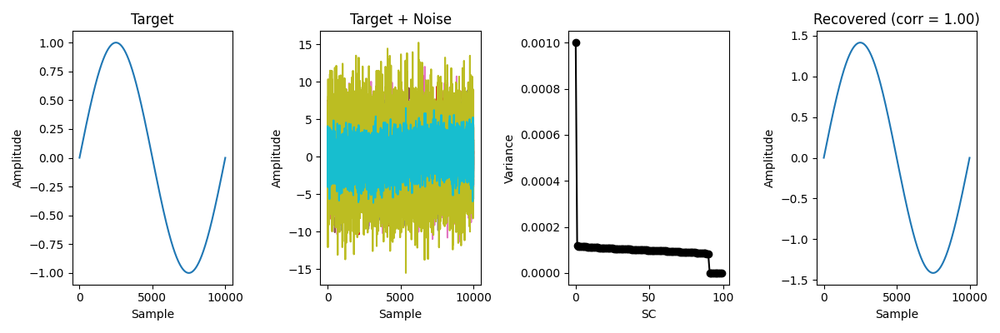

Note
Go to the end to download the full example code.
mCCA example: Sinusoidal target in separable noise#
Reproduced from de Cheveigné et al. (2018).
Synthetic data for this example consisted of 10 data matrices, each of dimensions 10000 samples x 10 channels. Each was obtained by multiplying 9 Gaussian noise time series (independent and uncorrelated) by a 9 x 10 mixing matrix with random Gaussian coefficients. To this background of noise was added a “target” consisting of a sinusoidal time series multiplied by a 1 x 10 mixing matrix with random coefficients. The target was the same for all data matrices, but the mixing matrices differed, as were the noise matrices. The SNR was set to 10−20, i.e. a very unfavorable SNR. The noise is of rank 9 and the signal of rank 1, so signal and noise are in principle linearly separable.
The useful question here is whether the first recovered shared component still resembles the known sinusoidal target despite the poor SNR.
Uses meegkit.cca.mcca().
References#
import matplotlib.pyplot as plt
import numpy as np
from meegkit import cca
# Set the seed for the random number generator for reproducibility
rng = np.random.default_rng(5)
Generate toy data#
Constants
num_matrices = 10
num_samples = 10000
num_channels = 10
noise_rank = 9
signal_rank = 1
unfavorable_SNR_dB = -20 # SNR in decibels
# Generate noise matrices and mixing matrices
noise_matrices = [rng.normal(size=(num_samples, noise_rank))
for _ in range(num_matrices)]
mixing_matrices = [rng.normal(size=(noise_rank, num_channels))
for _ in range(num_matrices)]
# Generate sinusoidal target
t = np.linspace(0, 1, num_samples)
target_signal = np.sin(2 * np.pi * t) # 1 Hz sinusoidal signal
# Generate signal mixing matrix
signal_mixing_matrix = rng.normal(size=(signal_rank, num_channels))
# Prepare data matrices
data_matrices = []
for i in range(num_matrices):
# Create noise for current data matrix
noise = np.matmul(noise_matrices[i], mixing_matrices[i])
# Create signal for current data matrix
signal = np.matmul(target_signal.reshape(-1, 1), signal_mixing_matrix)
# Adjust the power of signal to achieve the desired SNR
noise_power = np.mean(noise**2)
signal_power = 10**(unfavorable_SNR_dB / 10) * noise_power
signal = np.sqrt(signal_power / np.mean(signal**2)) * signal
# Add signal and noise
data_matrix = signal + noise
data_matrices.append(data_matrix)
# Concatenate data matrices
x = np.concatenate(data_matrices, axis=-1)
Use mCCA to recover signal in noise#
# Compute Covariance matrix
C = np.dot(x.T, x)
# Compute mCCA from covariance
A, score, AA = cca.mcca(C, 10)
# Compute the recovered signal using first SC
x_recovered = x.dot(A)[:, 0]
# Normalize the recovered signal
x_recovered = x_recovered / x_recovered.std()
# Compute variance across SCs
variance = np.var(x.dot(A), axis=0)
target_corr = np.corrcoef(target_signal, x_recovered)[0, 1]
Plot the results#
What to look for: - One or a few shared components should dominate the variance plot. - The recovered signal should visibly resemble the sinusoidal target. - The printed correlation with the target should remain clearly positive.
fig, ax = plt.subplots(1, 4, figsize=(12, 4))
ax[0].plot(target_signal)
ax[0].set_title("Target")
ax[0].set_xlabel("Sample")
ax[0].set_ylabel("Amplitude")
ax[1].plot(data_matrix)
ax[1].set_title("Target + Noise")
ax[1].set_ylabel("Amplitude")
ax[1].set_xlabel("Sample")
ax[2].plot(variance, "o-k")
ax[2].set_xlabel("SC")
ax[2].set_ylabel("Variance")
ax[3].plot(x_recovered)
ax[3].set_title(f"Recovered (corr = {target_corr:.2f})")
ax[3].set_ylabel("Amplitude")
ax[3].set_xlabel("Sample")
plt.tight_layout()
print(f"Correlation with target signal: {target_corr:.3f}")
plt.show()

Correlation with target signal: 1.000
Total running time of the script: (0 minutes 0.678 seconds)